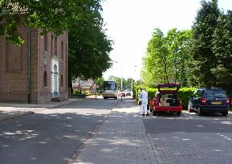
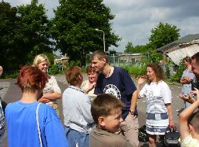
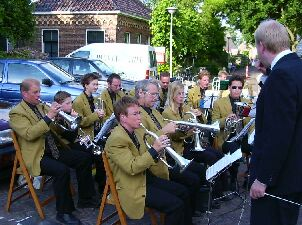

|
Нидерланды (Июнь 2003) - Польша-Германия-Нидерланды
Июнь 11, 2003 /9804 PB NOORDHORN, NETHERLANDS/
В ~3:10 пересекли границу Германии (хотя, какая там граница). Некоторые, кто не спал, говорили, что простояли около часа. Я спал :). Когда проснулся, посмотрел в окно, сначала не въехал, почему мы ещё в Польше, а потом мне сказали, что границу уже проехали. Уж больно похожи трассы у них. Саму Германию шанса посмотреть не представилось, так как мы ехали по автостраде, проходящей за городом. А то, что у них не ограниченный лимит скорости это правда :).
В 11:00 (всё ещё по нашему времени, т.к. часы я ещё не переводил) мы остановились возле церкви. Почему-то любят эти иностранцы все мероприятия, особенно сейшены, проводить возле церкви, ну это не важно.

Вот, собственно, и наш автобус
Хозяйка немного опоздала, но узнала нас (а как же, ведь была у нас в прошлом году). Чмокнулись со всеми, кто хотел , а потом поехали домой (ещё где-то около часа езды).

Традиционные голландские поцелуи, хех
Дороги у них прикольные, маленькие такие, домики тоже небольшие, как в сказке, двухэтажные, но не просторные, зато зелени много во дворе.
Дома никого не было – последние дни в школе, поэтому нужно сдавать разные тесты, зачёты и т.п., хозяин на работе, только горничная с улыбкой поприветствовала нас и продолжила свою работу. Кстати, имена голландцев я не старался запоминать, только нашей семьи и пару друзей и всё, так как уж больно тяжко запоминаются у них имена, да и моё, я думаю, никто не помнит :). Дом семьи, в которую мы приехали, распложен на территории фирмы, в которой работает наш хозяин. Как я позже узнал, по счёту это их четвёртый дом. Из предыдущих переезжали по разным причинам: то далеко от работы, то детям в школу далеко ходить и т.п. Совсем забыл, из детей была лишь пре-младшая (во завернул:)), то есть она старше только самой младшей, хм, чё за бред получается, в общем, зовут её Marjolein. Сразу распределили комнаты, где кто будет дремать. Меня в комнату старшей, но без последней :).
Немного посидели возле телика (да, пейзаж открывается из дома просто великолепный – недалеко от дома проходит речной канал, по которому плавают кораблики, при том очень большие, но никто не купается, видать жить хотят:)), потом я поехал встречать в хозяйкой Rolinde’у. Она на поезде приехала. Странные у них остановки для этих самых поездов. Как у нас для автобусов. Небольшое сооружение из стекла и поезда ходят через 15 минут. Ещё шлагбаум на пешеходной дорожке стоит. Тут же рядом электронная касса для покупки билетов. Хотя котроллеры не часто проверяют билеты, но если у тебя не окажется оного, то штраф огромный (даже по их меркам, про наши я уже молчу, можно неплохой cd-плеер купить). Возле остановок стоит стоянка для велосипедов, они ставят велосипеды (на замок), а сами едут в школу или куда там ещё. Но как сказала мне хозяйка, не все находят свои велики :). Так вот, вышла Ролинда из поезда, почмокались (у них по традиции 3 раза….даже с незнакомой девушкой :-р) и поехала домой, по дороге я спросил как дела в школе, сказала, что плохо сдала тест по географии и придётся пересдавать, просто ей не нравится этот предмет вот и мучается. Как только приехали, Ролинда в нет . Как потом мне стало ясно от Херита (Gerriet) они платят в месяц 33 с копейками евро и получают высокоскоростной доступ в Интернет круглые сутки со скоростью 260 kb/s!!!
Под вечер поехал с хозяйкой за покупками в магазин. А сколько пива :))). Потом заглянули в шоп с медиа техникой. Цены на плееры не помню, но где-то около 60-ти, 80-ти евро. Ушёл я от туда с чувством, что ещё вернусь :). Вернулись домой, за четыре захода занесли продукты. Вернулась Франсиска (Franciska), опять чмокнулись. Такая довольная была, спросила, как доехали, вся прямо светится, ну ещё бы, целый год переписывались. Потом она полезла в нет, а говорила, что не чатится =). Оказалось, что она юзает MSN Messenger. Я решил себе тоже такую фигню скачать, благо договорились, если чё встретиться :). Чем-то похож этот МСН на Аську – тоже ищет чела по мылу или ещё там чего, а потом просто конектятся двое (не больше) и вперёд – chat away! А печатают они в чате… ба-а, как угорелые. Потом пришла самая младшая Кирстен (Kirsten). Вот я c ней не чмокался – застеснялась она :).
В ~21 час (уже по их времени – на час раньше, чем у нас) собрались мы на концерт. Пока шли на концерт Ролинда догнала со словами «ой, не спеши» :))). Шли и болтали про учёбу, обо мне, о ней. Концертом оказалась некая маленькая группа (около 15-ти чел).

Мини-концерт на улице
Прикольно то, что зрителей оказалось меньше, чем участников самой группы! Я уже упоминал, что дороги у них узкие? Так вот, они (группа) были с одной стороны дороги, а зрители с другой. Между нами расстояние около 7-ми метров. И вот по этой дороге (шириной около 4-х метров) проносятся (не просто едут) машины и др. транспорт! И хоть бы кто глазом моргнул!! Трупники (от слова труппа :-D) играли даже мелодию из кинофильма "Агент 007" :). Ролинда перед каждым началом мелодии переводила, что говори дирижер, ну, типа, кому посвящается, какой стиль и другой стаф. По дороге домой опят Ролинда догнала (чё ей нужно? :)), опять всё дорогу болтали =). По сравнению с прошлым годом, когда она была у нас, стала более раскрепощённой и это не может не радовать =). В прошлом году только я пытался установить контакт с ней, а теперь всё наоборот, хотя это не важно.
Ещё я видел как работает Херит (Gerriet). У него здоровенный тягач, на который он погружает машины и развозит их по различным филиалам компаний-производителей. Рассказывал, что за год проезжает всё Европу. Есть такие марки, что я первый раз слышал, типа КИА из подразделения компании "Хонда". Машинки все новенькие, ещё воняют внутри кожей :).
Till next time.
finn ©
|